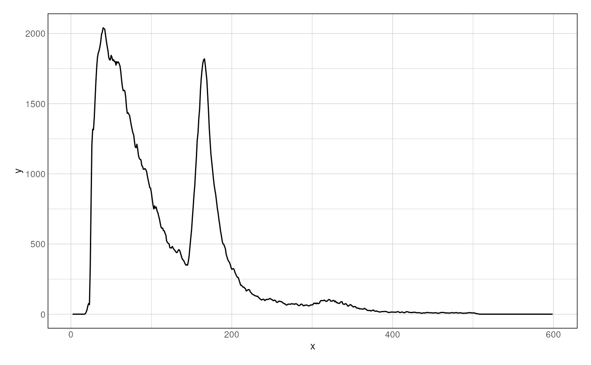

- Introduction
- Importing sequencing datasets
- Fragment size distribution
- Vplot(s)
- Footprints
- Local fragment distribution
- Session Info
Introduction
Overview
VplotR is an R package streamlining the process of generating V-plots, i.e. two-dimensional paired-end fragment density plots. It contains functions to import paired-end sequencing bam files from any type of DNA accessibility experiments (e.g. ATAC-seq, DNA-seq, MNase-seq) and can produce V-plots and one-dimensional footprint profiles over single or aggregated genomic loci of interest. The R package is well integrated within the Bioconductor environment and easily fits in standard genomic analysis workflows. Integrating V-plots into existing analytical frameworks has already brought additional insights in chromatin organization (Serizay et al., 2020).
The main user-level functions of VplotR are getFragmentsDistribution(), plotVmat(), plotFootprint() and plotProfile().
-
getFragmentsDistribution()computes the distribution of fragment sizes over sets of genomic ranges; -
plotVmat()is used to compute fragment density and generate V-plots; -
plotFootprint()generates the MNase-seq or ATAC-seq footprint at a set of genomic ranges. -
plotProfile()is used to plot the distribution of paired-end fragments at a single locus of interest.
Installation
VplotR can be installed from Bioconductor:
if(!requireNamespace("BiocManager", quietly = TRUE))
install.packages("BiocManager")
BiocManager::install("VplotR")
library("VplotR")Importing sequencing datasets
Using importPEBamFiles() function
Paired-end .bam files are imported using the importPEBamFiles() function as follows:
library(VplotR)
bamfile <- system.file("extdata", "ex1.bam", package = "Rsamtools")
fragments <- importPEBamFiles(
bamfile,
shift_ATAC_fragments = TRUE
)
#> > Importing /Users/runner/work/_temp/Library/Rsamtools/extdata/ex1.bam ...
#> > Filtering /Users/runner/work/_temp/Library/Rsamtools/extdata/ex1.bam ...
#> > Shifting /Users/runner/work/_temp/Library/Rsamtools/extdata/ex1.bam ...
#> > /Users/runner/work/_temp/Library/Rsamtools/extdata/ex1.bam import completed.
fragments
#> GRanges object with 1572 ranges and 0 metadata columns:
#> seqnames ranges strand
#> <Rle> <IRanges> <Rle>
#> [1] seq1 41-215 +
#> [2] seq1 54-255 +
#> [3] seq1 56-258 +
#> [4] seq1 65-255 +
#> [5] seq1 65-265 +
#> ... ... ... ...
#> [1568] seq2 1326-1542 -
#> [1569] seq2 1336-1544 -
#> [1570] seq2 1358-1550 -
#> [1571] seq2 1380-1557 -
#> [1572] seq2 1353-1562 -
#> -------
#> seqinfo: 2 sequences from an unspecified genome; no seqlengthsProvided datasets
Several datasets are available for this package:
- Sets of tissue-specific ATAC-seq experiments in young adult C. elegans (Serizay et al., 2020):
data(ce11_proms)
ce11_proms
#> GRanges object with 17458 ranges and 3 metadata columns:
#> seqnames ranges strand | TSS.fwd TSS.rev which.tissues
#> <Rle> <IRanges> <Rle> | <numeric> <numeric> <factor>
#> [1] chrI 11273-11423 + | 11294 11416 Intest.
#> [2] chrI 11273-11423 - | 11294 11416 Intest.
#> [3] chrI 26903-27053 - | 27038 26901 Ubiq.
#> [4] chrI 36019-36169 - | 36112 36028 Intest.
#> [5] chrI 42127-42277 - | 42216 42119 Soma
#> ... ... ... ... . ... ... ...
#> [17454] chrX 17670496-17670646 + | 17670678 17670478 Muscle
#> [17455] chrX 17684894-17685044 - | 17684919 17684932 Hypod.
#> [17456] chrX 17686030-17686180 - | 17686189 17686064 Unclassified
#> [17457] chrX 17694789-17694939 + | 17694962 17694934 Intest.
#> [17458] chrX 17711839-17711989 - | 17711974 17711854 Germline
#> -------
#> seqinfo: 6 sequences from an unspecified genome; no seqlengths
data(ATAC_ce11_Serizay2020)
ATAC_ce11_Serizay2020
#> $Germline
#> GRanges object with 462371 ranges and 0 metadata columns:
#> seqnames ranges strand
#> <Rle> <IRanges> <Rle>
#> [1] chrI 426-514 +
#> [2] chrI 3588-3854 +
#> [3] chrI 3640-3798 +
#> [4] chrI 3650-3694 +
#> [5] chrI 3732-3863 +
#> ... ... ... ...
#> [462367] chrX 17712277-17712469 -
#> [462368] chrX 17712279-17712342 -
#> [462369] chrX 17712282-17712565 -
#> [462370] chrX 17712285-17712384 -
#> [462371] chrX 17712287-17712576 -
#> -------
#> seqinfo: 7 sequences from an unspecified genome; no seqlengths
#>
#> $Neurons
#> GRanges object with 367935 ranges and 0 metadata columns:
#> seqnames ranges strand
#> <Rle> <IRanges> <Rle>
#> [1] chrI 4011-4241 +
#> [2] chrI 7397-7614 +
#> [3] chrI 11279-11502 +
#> [4] chrI 12744-12819 +
#> [5] chrI 14381-14433 +
#> ... ... ... ...
#> [367931] chrX 17687948-17687982 -
#> [367932] chrX 17699614-17699853 -
#> [367933] chrX 17706798-17706923 -
#> [367934] chrX 17708264-17708347 -
#> [367935] chrX 17709920-17710007 -
#> -------
#> seqinfo: 7 sequences from an unspecified genome; no seqlengths- MNase-seq experiment in yeast (Henikoff et al., 2011) and ABF1 binding sites:
data(ABF1_sacCer3)
ABF1_sacCer3
#> GRanges object with 567 ranges and 2 metadata columns:
#> seqnames ranges strand | relScore ID
#> <Rle> <IRanges> <Rle> | <numeric> <Rle>
#> [1] chrIV 392624-392639 + | 0.979866 MA0265.1
#> [2] chrIV 1196424-1196439 + | 0.979866 MA0265.1
#> [3] chrXIV 400687-400702 + | 0.979866 MA0265.1
#> [4] chrII 216540-216555 - | 0.978608 MA0265.1
#> [5] chrXVI 95317-95332 - | 0.974833 MA0265.1
#> ... ... ... ... . ... ...
#> [563] chrIV 1402786-1402801 + | 0.900182 MA0265.1
#> [564] chrX 545320-545335 + | 0.900182 MA0265.1
#> [565] chrXI 571301-571316 - | 0.900182 MA0265.1
#> [566] chrXIV 140631-140646 - | 0.900182 MA0265.1
#> [567] chrXVI 919179-919194 - | 0.900182 MA0265.1
#> -------
#> seqinfo: 17 sequences from an unspecified genome; no seqlengths
data(MNase_sacCer3_Henikoff2011)
MNase_sacCer3_Henikoff2011
#> GRanges object with 400000 ranges and 0 metadata columns:
#> seqnames ranges strand
#> <Rle> <IRanges> <Rle>
#> [1] chrI 2-116 +
#> [2] chrI 14-66 +
#> [3] chrI 15-134 +
#> [4] chrI 54-167 +
#> [5] chrI 66-104 +
#> ... ... ... ...
#> [399996] chrXVI 920439-920471 -
#> [399997] chrXVI 920439-920486 -
#> [399998] chrXVI 920439-920528 -
#> [399999] chrXVI 920442-920659 -
#> [400000] chrXVI 920454-920683 -
#> -------
#> seqinfo: 17 sequences from an unspecified genomeFragment size distribution
A preliminary control to check the distribution of fragment sizes (regardless of their location relative to genomic loci) can be performed using the getFragmentsDistribution() function.
df <- getFragmentsDistribution(
MNase_sacCer3_Henikoff2011,
ABF1_sacCer3
)
#> Warning in as.cls(x): NAs introduced by coercion
#> Warning in as.cls(x): NAs introduced by coercion
#> Warning in as.cls(x): NAs introduced by coercion
p <- ggplot(df, aes(x = x, y = y)) + geom_line() + theme_ggplot2()
p
#> Warning: Removed 2 row(s) containing missing values (geom_path).
Vplot(s)
Single Vplot
Once data is imported, a V-plot of paired-end fragments over loci of interest is generated using the plotVmat() function:
p <- plotVmat(x = MNase_sacCer3_Henikoff2011, granges = ABF1_sacCer3)
#> Computing V-mat
#> Normalizing the matrix
#> No normalization applied
#> Smoothing the matrix
p
Multiple Vplots
The generation of multiple V-plots can be parallelized using a list of parameters:
list_params <- list(
"MNase\n@ ABF1" = list(MNase_sacCer3_Henikoff2011, ABF1_sacCer3),
"MNase\n@ random loci" = list(
MNase_sacCer3_Henikoff2011, sampleGRanges(ABF1_sacCer3)
)
)
p <- plotVmat(
list_params,
cores = 1
)
#> - Processing sample 1/2
#> - Processing sample 2/2
pFor instance, ATAC-seq fragment density can be visualized at different classes of ubiquitous and tissue-specific promoters in C. elegans.
list_params <- list(
"Germline ATACseq\n@ Ubiq. proms" = list(
ATAC_ce11_Serizay2020[['Germline']],
ce11_proms[ce11_proms$which.tissues == 'Ubiq.']
),
"Germline ATACseq\n@ Germline proms" = list(
ATAC_ce11_Serizay2020[['Germline']],
ce11_proms[ce11_proms$which.tissues == 'Germline']
),
"Neuron ATACseq\n@ Ubiq. proms" = list(
ATAC_ce11_Serizay2020[['Neurons']],
ce11_proms[ce11_proms$which.tissues == 'Ubiq.']
),
"Neuron ATACseq\n@ Neuron proms" = list(
ATAC_ce11_Serizay2020[['Neurons']],
ce11_proms[ce11_proms$which.tissues == 'Neurons']
)
)
p <- plotVmat(
list_params,
cores = 1,
nrow = 2, ncol = 5
)
#> - Processing sample 1/4
#> - Processing sample 2/4
#> - Processing sample 3/4
#> - Processing sample 4/4
p
Vplots normalization
Different normalization approaches are available using the normFun argument.
- Un-normalized raw counts can be plotted by specifying
normFun = 'none'.
# No normalization
p <- plotVmat(
list_params,
cores = 1,
nrow = 2, ncol = 5,
verbose = FALSE,
normFun = 'none'
)
#> Computing V-mat
#> Normalizing the matrix
#> No normalization applied
#> Smoothing the matrix
#> Computing V-mat
#> Normalizing the matrix
#> No normalization applied
#> Smoothing the matrix
#> Computing V-mat
#> Normalizing the matrix
#> No normalization applied
#> Smoothing the matrix
#> Computing V-mat
#> Normalizing the matrix
#> No normalization applied
#> Smoothing the matrix
p
- By default, plots are normalized by the library depth of the sequencing run and by the number of loci used to compute fragment density.
# Library depth + number of loci of interest (default)
p <- plotVmat(
list_params,
cores = 1,
nrow = 2, ncol = 5,
verbose = FALSE,
normFun = 'libdepth+nloci'
)
#> Computing V-mat
#> Normalizing the matrix
#> Computing raw library depth
#> Dividing Vmat by its number of loci
#> Smoothing the matrix
#> Computing V-mat
#> Normalizing the matrix
#> Computing raw library depth
#> Dividing Vmat by its number of loci
#> Smoothing the matrix
#> Computing V-mat
#> Normalizing the matrix
#> Computing raw library depth
#> Dividing Vmat by its number of loci
#> Smoothing the matrix
#> Computing V-mat
#> Normalizing the matrix
#> Computing raw library depth
#> Dividing Vmat by its number of loci
#> Smoothing the matrix
p- Alternatively, heatmaps can be internally z-scored or scaled to a specific quantile.
# Zscore
p <- plotVmat(
list_params,
cores = 1,
nrow = 2, ncol = 5,
verbose = FALSE,
normFun = 'zscore'
)
#> Computing V-mat
#> Normalizing the matrix
#> Smoothing the matrix
#> Computing V-mat
#> Normalizing the matrix
#> Smoothing the matrix
#> Computing V-mat
#> Normalizing the matrix
#> Smoothing the matrix
#> Computing V-mat
#> Normalizing the matrix
#> Smoothing the matrix
p
# Quantile
p <- plotVmat(
list_params,
cores = 1,
nrow = 2, ncol = 5,
verbose = FALSE,
normFun = 'quantile',
s = 0.99
)
#> Computing V-mat
#> Normalizing the matrix
#> Smoothing the matrix
#> Computing V-mat
#> Normalizing the matrix
#> Smoothing the matrix
#> Computing V-mat
#> Normalizing the matrix
#> Smoothing the matrix
#> Computing V-mat
#> Normalizing the matrix
#> Smoothing the matrix
pFootprints
VplotR also implements a function to profile the footprint from MNase or ATAC-seq over sets of genomic loci. For instance, CTCF is known for its ~40-bp large footprint at its binding loci.
p <- plotFootprint(
MNase_sacCer3_Henikoff2011,
ABF1_sacCer3
)
#> - Getting cuts
#> - Getting cut coverage
#> - Getting cut coverage / target
#> - Reformatting data into matrix
#> - Plotting footprint
p
Local fragment distribution
VplotR provides a function to plot the distribution of paired-end fragments over an individual genomic window.
data(MNase_sacCer3_Henikoff2011_subset)
genes_sacCer3 <- GenomicFeatures::genes(TxDb.Scerevisiae.UCSC.sacCer3.sgdGene::
TxDb.Scerevisiae.UCSC.sacCer3.sgdGene
)
p <- plotProfile(
fragments = MNase_sacCer3_Henikoff2011_subset,
window = "chrXV:186,400-187,400",
loci = ABF1_sacCer3,
annots = genes_sacCer3,
min = 20, max = 200, alpha = 0.1, size = 1.5
)
#> Filtering and resizing fragments
#> 32276 fragments mapped over 1001 bases
#> Filtering and resizing fragments
#> Generating plot
#> Warning: Removed 49 row(s) containing missing values (geom_path).
#> Warning: Removed 5176 rows containing missing values (geom_point).
#> Warning: Removed 19 row(s) containing missing values (geom_path).
pSession Info
sessionInfo()
#> R version 4.0.5 (2021-03-31)
#> Platform: x86_64-apple-darwin17.0 (64-bit)
#> Running under: macOS Catalina 10.15.7
#>
#> Matrix products: default
#> BLAS: /Library/Frameworks/R.framework/Versions/4.0/Resources/lib/libRblas.dylib
#> LAPACK: /Library/Frameworks/R.framework/Versions/4.0/Resources/lib/libRlapack.dylib
#>
#> locale:
#> [1] en_US.UTF-8/en_US.UTF-8/en_US.UTF-8/C/en_US.UTF-8/en_US.UTF-8
#>
#> attached base packages:
#> [1] parallel stats4 stats graphics grDevices utils datasets
#> [8] methods base
#>
#> other attached packages:
#> [1] VplotR_1.2 magrittr_2.0.1 ggplot2_3.3.3
#> [4] GenomicRanges_1.42.0 GenomeInfoDb_1.26.7 IRanges_2.24.1
#> [7] S4Vectors_0.28.1 BiocGenerics_0.36.1
#>
#> loaded via a namespace (and not attached):
#> [1] bitops_1.0-6
#> [2] matrixStats_0.58.0
#> [3] fs_1.5.0
#> [4] bit64_4.0.5
#> [5] RColorBrewer_1.1-2
#> [6] progress_1.2.2
#> [7] httr_1.4.2
#> [8] rprojroot_2.0.2
#> [9] tools_4.0.5
#> [10] utf8_1.2.1
#> [11] R6_2.5.0
#> [12] DBI_1.1.1
#> [13] colorspace_2.0-0
#> [14] withr_2.4.2
#> [15] tidyselect_1.1.0
#> [16] prettyunits_1.1.1
#> [17] bit_4.0.4
#> [18] curl_4.3
#> [19] compiler_4.0.5
#> [20] textshaping_0.3.3
#> [21] Biobase_2.50.0
#> [22] xml2_1.3.2
#> [23] desc_1.3.0
#> [24] DelayedArray_0.16.3
#> [25] rtracklayer_1.50.0
#> [26] labeling_0.4.2
#> [27] scales_1.1.1
#> [28] askpass_1.1
#> [29] rappdirs_0.3.3
#> [30] pkgdown_1.6.1
#> [31] systemfonts_1.0.1
#> [32] stringr_1.4.0
#> [33] digest_0.6.27
#> [34] Rsamtools_2.6.0
#> [35] rmarkdown_2.7
#> [36] XVector_0.30.0
#> [37] pkgconfig_2.0.3
#> [38] htmltools_0.5.1.1
#> [39] MatrixGenerics_1.2.1
#> [40] dbplyr_2.1.1
#> [41] fastmap_1.1.0
#> [42] highr_0.9
#> [43] rlang_0.4.10
#> [44] RSQLite_2.2.6
#> [45] TxDb.Scerevisiae.UCSC.sacCer3.sgdGene_3.2.2
#> [46] farver_2.1.0
#> [47] generics_0.1.0
#> [48] zoo_1.8-9
#> [49] BiocParallel_1.24.1
#> [50] dplyr_1.0.5
#> [51] RCurl_1.98-1.3
#> [52] GenomeInfoDbData_1.2.4
#> [53] Matrix_1.3-2
#> [54] Rcpp_1.0.6
#> [55] munsell_0.5.0
#> [56] fansi_0.4.2
#> [57] lifecycle_1.0.0
#> [58] stringi_1.5.3
#> [59] yaml_2.2.1
#> [60] SummarizedExperiment_1.20.0
#> [61] zlibbioc_1.36.0
#> [62] plyr_1.8.6
#> [63] BiocFileCache_1.14.0
#> [64] grid_4.0.5
#> [65] blob_1.2.1
#> [66] crayon_1.4.1
#> [67] lattice_0.20-41
#> [68] Biostrings_2.58.0
#> [69] cowplot_1.1.1
#> [70] GenomicFeatures_1.42.3
#> [71] hms_1.0.0
#> [72] knitr_1.32
#> [73] pillar_1.6.0
#> [74] reshape2_1.4.4
#> [75] biomaRt_2.46.3
#> [76] XML_3.99-0.6
#> [77] glue_1.4.2
#> [78] evaluate_0.14
#> [79] vctrs_0.3.7
#> [80] gtable_0.3.0
#> [81] openssl_1.4.3
#> [82] purrr_0.3.4
#> [83] assertthat_0.2.1
#> [84] cachem_1.0.4
#> [85] xfun_0.22
#> [86] ragg_1.1.2
#> [87] tibble_3.1.1
#> [88] GenomicAlignments_1.26.0
#> [89] AnnotationDbi_1.52.0
#> [90] memoise_2.0.0
#> [91] ellipsis_0.3.1